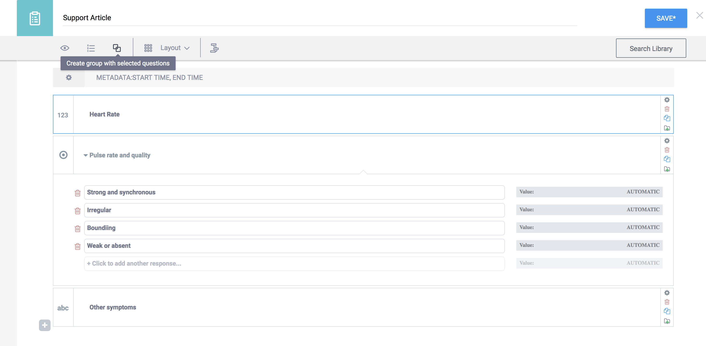
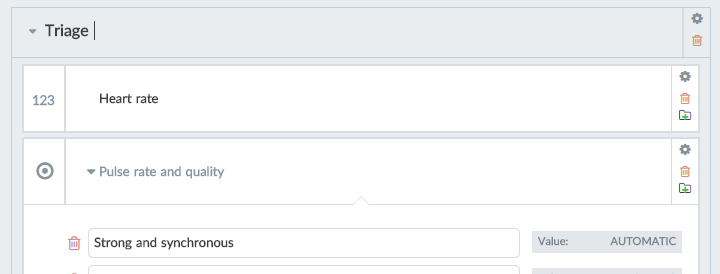
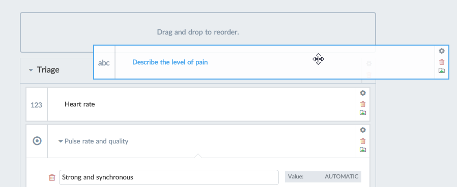
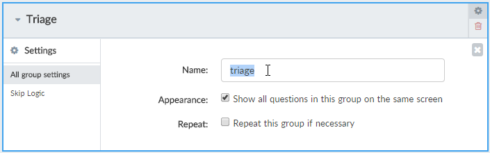
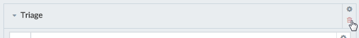
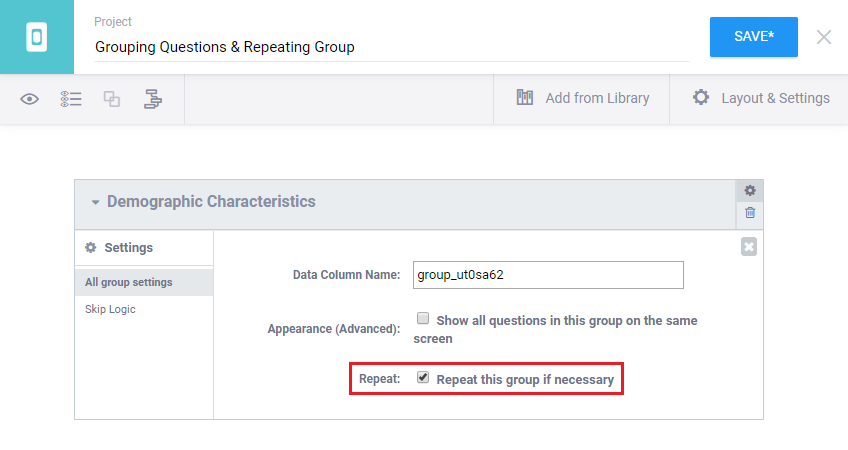

What do you need help with?
Search the knowledge base, browse our resources and visit our forum for more detail information
Search the knowledge base, browse our resources and visit our forum for more detail information
Groups are collection of one or more questions inside a form. Groups can also be grouped themselves. There are many scenarios when using groups can be useful:
To create a group just select one question, then click the Group Questions button. Then, drag and drop the other questions in your form that you want included in this group.

A group label can be changed just like question labels. The label will appear above the questions that are within it.

It is possible to display all questions on the same screen when collecting data with KoBoCollect. Click on the group’s settings box and tick ‘Show all questions in this group on the same screen’. (When you preview your form, all questions are by default displayed on the same screen so you you can view and test it more quickly, so this setting doesn’t affect your form in the preview.)

You can drag questions into a group, or out of them (there has to remain at least one question in the group though). You can also drag-and-drop the entire group to a different location.

You can also change the internal unique Name (ID) of a group. Only letters, numbers, and underscores are allowed as the group Name, and it can’t start with a number. By default, each group receives a unique random name when you create it.

To remove a group, click the Delete button in the group header. It will only break apart the group; its child questions won’t be affected.

Repeating groups of questions can be answered multiple times. For example, in a household survey you might want to ask the name, age, gender, and education status of every household member, but you don’t know in advance how many members there will be.
To a group of repeating questions, first group the questions that should be repeated
Go to the group’s Settings and tick Repeat this group if necessary.

During the interview, the interviewer will be able to enter the details to these questions as many times as required.
Advanced users: The number of times this repeat group can be answered is by default unlimited. After answering the questions the interviewer is able to add another loop after each time. It is possible to set the number of loops in advance to a specific number. For example, if the form asks ‘Number of household members’ the number of loops can be set to the number given to that question. To specify the number of repeat loops, save your form and export it to XLS format. Inside the file, add a column in the survey sheet called ‘repeat_count’. For the specific repeat group in your file, enter a number into that column. Alternatively, you can specify the question whose number should be used, using the referencing style, such as ${household_members}.
Sometimes you might need to include certain details from a previous repeat group in another repeat group. For example, your first repeat group might ask the names of each household member, while later you would like to ask about the education status for each of these members. While it’s possible to ask about all details in a single repeat group, this may be awkward in a large survey. This can be done using the indexed-repeat() function in a Calculation question.
To include a response (such as a name) in different repeat groups follow the example in this form. The form in the example uses the indexed-repeat() function in line 10 in the following way: indexed-repeat(${name}, ${demographic}, position(..)), whereas ${name} is the question “What is your name?”, ${demographic} refers to the first repeat group that includes the name question, and position(..) specifies the current repeat group instance in the second repeat group. By including ${name_individual} in the last question the interviewer knows which person the question refers to.